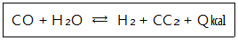
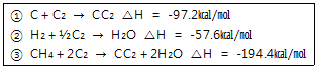
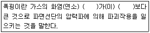
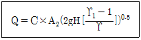
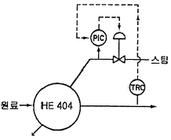

가스산업기사 (2014-03-02 기출문제)
1과목: 연소공학
1. 화학 반응속도를 지배하는 요인에 대한 설명으로 옳은 것은?
- 압력이 증가하면 반응속도는 항상 증가한다.
- 생성물질의 농도가 커지면 반응속도는 항상 증가한다.
- 자신은 변하지 않고 다른 물질의 화학변화를 촉진 하는 물질을 부촉매라고 한다.
- 온도가 높을수록 반응속도가 증가한다.
(정답률: 87%)

2. 다음 반응에서 평형을 오른쪽으로 이동시켜 생성물을 더 많이 얻으려면 어떻게 해야 하는가?

- 온도를 높인다.
- 압력을 높인다.
- 온도를 낮춘다.
- 압력을 낮춘다.
(정답률: 79%)
3. 연소범위에 대한 온도의 영향으로 옳은 것은?
- 온도가 낮아지면 방열속도가 느려져서 연소범위가 넓어진다.
- 온도가 낮아지면 방열속도가 느려져서 연소범위가 좁아진다.
- 온도가 낮아지면 방열속도가 빨라져서 연소범위가 넓어진다.
- 온도가 낮아지면 방열속도가 빨라져서 연소범위가 좁아진다.
(정답률: 66%)
4. 안전간격에 대한 설명으로 옳지 않은 것은?
- 안전간격은 방폭전기기기 등의 설계에 중요하다.
- 한계직경은 가는 관 내부를 화염이 진행할 때 도중에 꺼지는 관의 직경이다.
- 두 평행판 간의 거리를 화염이 전파하지 않을 때까지 좁혔을 때 그 거리를 소염거리라고 한다.
- 발화의 제반조건을 갖추었을 때 화염이 최대한으로 전파되는 거리를 화염일주라고 한다.
(정답률: 76%)
5. 상온, 상압하에서 에탄(C2H6)이 공기와 혼합되는 경우 폭발범위는 약 몇 %인가?
- 3.0~10.5%
- 3.0~12.5%
- 2.7~10.5%
- 2.7~12.5%
(정답률: 87%)
6. 폭발과 관련한 가스의 성질에 대한 설명으로 옳지 않은 것은?
- 연소속도가 큰 것일수록 위험하다.
- 인화온도가 낮을수록 위험하다.
- 안전간격이 큰 것일수록 위험하다.
- 가스의 비중이 크면 낮은 곳에 체류한다.
(정답률: 92%)
7. 다음 반응식을 이용하여 메탄(CH4)의 생성열을 계산하면?

- ∆H = -17㎉/㏖
- ∆H = -18㎉/㏖
- ∆H = -19㎉/㏖
- ∆H = -20㎉/㏖
(정답률: 87%)
8. 공기 중에서 압력을 증가시켰더니 폭발범위가 좁아지다가 고압 이후부터 폭발범위가 넓어지기 시작했다. 어떤 가스인가?
- 수소
- 일산화탄소
- 메탄
- 에틸렌
(정답률: 85%)
9. 다음 기체 가연물 중 위험도(H)가 가장 큰 것은?
- 수소
- 아세틸렌
- 부탄
- 메탄
(정답률: 87%)
10. 가연성 물질의 위험성에 대한 설명으로 틀린 것은?
- 화염일주한계가 작을수록 위험성이 크다.
- 최소 점화에너지가 작을수록 위험성이 크다.
- 위험도는 폭발상한과 하한의 차를 폭발하한계로 나눈 값이다.
- 암모니아의 위험도는 2이다.
(정답률: 82%)
11. 다음 연료 중 착화온도가 가장 낮은 것은?
- 벙커 C유
- 무연탄
- 역청탄
- 목재
(정답률: 83%)
12. 어떤 기체의 확산속도가 SO2의 2배였다. 이 기체는 어떤 물질로 추정되는가?
- 수소
- 메탄
- 산소
- 질소
(정답률: 67%)
13. 다음은 폭굉의 정의에 관한 설명이다. 괄호안에 알맞은 용어는?

- 전파속도-화염온도
- 폭발파-충격파
- 전파온도-충격파
- 전파속도-음속
(정답률: 92%)
14. 층류 연소속도에 대한 설명으로 옳은 것은?
- 미연소 혼합기의 비열이 클수록 층류 연소속도는 크게 된다.
- 미연소 혼합기의 비중이 클수록 층류 연소속도는 크게 된다.
- 미연소 혼합기의 분자량이 클수록 층류 연소속도는 크게 된다.
- 미연소 혼합기의 열전도율이 클수록 층류 연소속도는 크게 된다.
(정답률: 73%)
15. 예혼합연소에 대한 설명으로 옳지 않은 것은?
- 난류연소속도는 연료의 종류, 온도, 압력에 대응하는 고유 값을 갖는다.
- 전형적인 층류 예혼합화염은 원추상화염이다.
- 층류 예혼합화염의 경우 대기압에서의 화염두께는 대단히 얇다.
- 난류 예혼합화염은 층류 화염보다 훨씬 높은 연소 속도를 가진다.
(정답률: 58%)
16. 일정량의 기체의 체적은 온도가 일정할 때 어떤 관계가 있는가? (단, 기체는 이상기체로 거동한다.)
- 압력에 비례한다.
- 압력에 반비례한다.
- 비열에 비례한다.
- 비열에 반비례한다.
(정답률: 77%)
17. 1㎾h의 열당량은 약 몇 ㎉인가? (단, 1㎉는 4.2J이다.)
- 427
- 576
- 660
- 857
(정답률: 55%)
18. 폭굉유도거리(DID)가 짧아지는 요인이 아닌 것은?
- 압력이 낮을 때
- 점화원의 에너지가 클 때
- 관 속에 장애물이 있을 때
- 관지름이 작을 때
(정답률: 81%)
19. 가로, 세로, 높이가 각각 3m, 4m, 3m인 가스 저장 소에 최소 몇 L의 부탄가스가 누출되면 폭발될 수 있는가? (단, 부탄가스의 폭발범위는 1.8~8.4%이다.)
- 460
- 560
- 660
- 760
(정답률: 63%)
20. 다음 중 액체연료의 인화점 측정방법이 아닌 것은?
- 타그법
- 펜스키 마르텐스법
- 에벨펜스키법
- 봄브법
(정답률: 83%)
2과목: 가스설비
21. 축류 펌프의 특징에 대한 설명으로 틀린 것은?
- 비속도가 적다.
- 마감기동이 불가능하다.
- 펌프의 크기가 작다.
- 높은 효율을 얻을 수 있다.
(정답률: 56%)
22. 고온, 고압 하에서 수소를 사용하는 장치공정의 재질은 어느 재료를 사용하는 것이 가장 적당한가?
- 탄소강
- 스테인리스강
- 타프치동
- 실리콘강
(정답률: 78%)
23. 가연성가스 및 독성가스 용기의 도색 구분이 옳지 않은 것은?
- LPG - 회색
- 액화암모니아 - 백색
- 수소 - 주황색
- 액화염소 - 청색
(정답률: 86%)
24. 린데식 액화장치의 구조상 반드시 필요하지 않은 것은?
- 열교환기
- 증발기
- 팽창밸브
- 액화기
(정답률: 61%)
25. 다음 보기 중 비등점이 낮은 것부터 바르게 나열된 것은?
- ⓑ-ⓒ-ⓓ-ⓐ
- ⓑ-ⓒ-ⓐ-ⓓ
- ⓑ-ⓓ-ⓒ-ⓐ
- ⓑ-ⓓ-ⓐ-ⓒ
(정답률: 60%)
26. 원통형 용기에서 원주방향 응력은 축방향 응력의 얼마인가?
- 0.5
- 1배
- 2배
- 4배
(정답률: 81%)
27. LP가스의 연소방식 중 분젠식 연소방식에 대한 설명으로 옳은 것은?
- 불꽃의 색깔은 적색이다.
- 연소 시 1차 공기, 2차 공기가 필요하다.
- 불꽃의 길이가 길다.
- 불꽃의 온도가 900℃ 정도이다.
(정답률: 81%)
28. 액화천연가스(LNG)의 탱크로서 저온수축을 흡수하는 기구를 가진 금속박판을 사용한 탱크는?
- 프리스트레스트 탱크
- 동결식 탱크
- 금속제 이중구조 탱크
- 멤브레인 탱크
(정답률: 77%)
29. 성능계수가 3.2인 냉동기가 10ton의 냉동을 하기 위하여 공급하여야 할 동력은 약 몇 ㎾인가?
- 10
- 12
- 14
- 16
(정답률: 63%)
30. 가스용 PE배관을 온도 40℃ 이상의 장소에 설치할 수 있는 가장 적절한 방법은?
- 단열성능을 가지는 보호판을 사용한 경우
- 단열성능을 가지는 침상재료를 사용한 경우
- 로캐이팅 와이어를 이용하여 단열조치를 한 경우
- 파이프슬리브를 이용하여 단열조치를 한 경우
(정답률: 72%)
31. 가스온수기에 반드시 부착하지 않아도 되는 안전장치는?
- 소화안전장치
- 과열방지장치
- 불완전연소방지장치
- 전도안전장치
(정답률: 81%)
32. 에어졸 용기의 내용적은 몇 L 이하인가?
- 1
- 3
- 5
- 10
(정답률: 85%)
33. 금속 재료에 대한 설명으로 틀린 것은?
- 탄소강은 철과 탄소를 주요성분으로 한다.
- 탄소 함유량이 0.8% 이하의 강을 저탄소강이라 한다.
- 황동은 구리와 아연의 합금이다.
- 강의 인장강도는 300℃ 이상이 되면 급격히 저하 된다.
(정답률: 75%)
34. 아세틸렌 용기의 다공질물 용적이 30L, 침윤잔용적이 6L일 때 다공도는 몇 %이며 관련법상 합격인지 판단하면?
- 20%로서 합격이다.
- 20%로서 불합격이다.
- 80%로서 합격이다.
- 80%로서 불합격이다.
(정답률: 82%)
35. LPG 저장탱크 2기를 설치하고자 할 경우, 두 저장 탱크의 최대 지름이 각각 2m, 4m일 때 상호 유지하여야 할 최소 이격거리는?
- 0.5m
- 1m
- 1.5m
- 2m
(정답률: 73%)
36. 저압 가스 배관에서 관의 내경이 1/2로 되면 압력손실은 몇 배로 되는가? (단, 다른 모든 조건은 동일한 것으로 본다.)
- 4
- 16
- 32
- 64
(정답률: 77%)
37. 전열 온수식 기화기에서 사용되는 열매체는?
- 공기
- 기름
- 물
- 액화가스
(정답률: 84%)
38. 저온 수증기 개질 프로세스의 방식이 아닌 것은?
- C.R.G식
- M.R.G식
- Lurgi식
- I.C.I식
(정답률: 73%)
39. 자동절체식 조정기 설치에 있어서 사용측과 예비측 용기의 밸브 개폐방법에 대한 설명으로 옳은 것은?
- 사용측 밸브는 열고 예비측 밸브는 닫는다.
- 사용측 밸브는 닫고 예비측 밸브는 연다.
- 사용측 예비측 밸브 전부를 닫는다.
- 사용측 예비측 밸브 전부를 연다.
(정답률: 71%)
40. 고압가스용 기화장치에 대한 설명으로 옳은 것은?
- 증기 및 온수가열구조의 것에는 기화장치 내의 물을 쉽게 뺄 수 있는 드레인밸브를 설치한다.
- 기화기에 설치된 안전장치는 최고충전압력에서 작동하는 것으로 한다.
- 기화장치에는 액화가스의 유출을 방지하기 위한 액 밀봉 장치를 설치한다.
- 임계온도가 -50℃이하인 액화가스용 고정식 기화장치의 압력이 허용압력을 초과하는 경우 압력을 허용압력 이하로 되돌릴 수 있는 안전장치를 설치한다.
(정답률: 67%)
3과목: 가스안전관리
41. 고압가스안전관리법에서 정하고 있는 특정 고압가스가 아닌 것은?
- 천연가스
- 액화염소
- 게르만
- 염화수소
(정답률: 68%)
42. 가연성가스를 차량에 고정된 탱크에 의하여 운반할 때 갖추어야 할 소화기의 능력단위 및 비치 개수가 옳게 짝지어진 것은?
- ABC용, B-12 이상 - 차량 좌우에 각각 1개 이상
- AB용, B-12 이상 - 차량 좌우에 각각 1개 이상
- ABC용, B-12 이상 - 차량에 1개 이상
- AB용, B-12 이상 - 차량에 1개 이상
(정답률: 79%)
43. 저장탱크의 내용적이 몇 m3 이상일 때 가스방출장치를 설치하여야 하는가?
- 1m3
- 3m3
- 5m3
- 10m3
(정답률: 75%)
44. 최고사용압력이 고압이고 내용적이 5m3인 도시가스 배관의 자기압력기록계를 이용한 기밀시험 시 기밀 유지시간은?
- 24분 이상
- 240분 이상
- 300분 이상
- 480분 이상
(정답률: 73%)
45. 안전성 평가는 관련 전문가로 구성된 팀으로 안전평가를 실시해야 한다. 다음 중 안전평가 전문가의 구성에 해당 하지 않는 것은?
- 공정운전 전문가
- 안전성평가 전문가
- 설계 전문가
- 기술용역 진단전문가
(정답률: 79%)
46. 액화석유가스를 충전한 자동차에 고정된 탱크는 지상에 설치된 저장탱크의 외면으로부터 몇 m 이상 떨어져 정차하여야 하는가?
- 1
- 3
- 5
- 8
(정답률: 47%)
47. 도시가스 제조시설에서 벤트스택의 설치에 대한 설명으로 틀린 것은?
- 벤트스택 높이는 방출된 가스의 착지농도가 폭발 상한계값 미만이 되도록 설치한다.
- 벤트스택에는 액화가스가 함께 방출되지 않도록 하는 조치를 한다.
- 벤트스택 방출구는 작업원이 통행하는 장소로부터 5m 이상 떨어진 곳에 설치한다.
- 벤트스택에 연결된 배관에는 응축액의 고임을 제거할 수 있는 조치를 한다.
(정답률: 71%)
48. 고압가스 저장탱크 물분무장치의 설치에 대한 설명으로 틀린 것은?
- 물분무장치는 30분 이상 동시에 방사할 수 있는 수원에 접속되어야 한다.
- 물분무장치는 매월 1회 이상 작동상황을 점검하여야 한다.
- 물분무장치는 저장탱크 외면으로부터 10m 이상 떨어진 위치에서 조작할 수 있어야 한다.
- 물분무장치는 표면적 1m2 당 8L/분을 표준으로 한다.
(정답률: 74%)
49. 가스의 종류와 용기도색의 구분이 잘못된 것은?
- 액화염소 : 황색
- 액화암모니아 : 백색
- 에틸렌(의료용) : 자색
- 싸이크로프로판(의료용) : 주황색
(정답률: 75%)
50. 가연성가스의 폭발등급 및 이에 대응하는 내압방폭 구조 폭발등급의 분류기준이 되는 것은?
- 최대안전틈새 범위
- 폭발 범위
- 최소점화전류비 범위
- 발화온도
(정답률: 86%)
51. 소형저장탱크의 설치방법으로 옳은 것은?
- 동일한 장소에 설치하는 경우 10기 이하로 한다.
- 동일한 장소에 설치하는 경우 충전질량의 합계는 7000㎏ 미만으로 한다.
- 탱크 지면에서 3㎝ 이상 높게 설치된 콘크리트 바닥 등에 설치한다.
- 탱크가 손상 받을 우려가 있는 곳에는 가드레일 등의 방호조치를 한다.
(정답률: 74%)
52. 액화가스를 차량에 고정된 탱크에 의해 250㎞의 거리까지 운반하려고 한다. 운반책임자가 동승하여 감독 및 지원을 할 필요가 없는 경우는?
- 에틸렌 : 3000㎏
- 아산화질소 : 3000㎏
- 암모니아 : 1000㎏
- 산소 : 6000㎏
(정답률: 65%)
53. 가스설비 및 저장설비에서 화재폭발이 발생하였다. 원인이 화기였다면 관련법상 화기를 취급하는 장소 까지 몇 m 이내 이어야 하는가?
- 2m
- 5m
- 8m
- 10m
(정답률: 58%)
54. 용기보관 장소에 대한 설명 중 옳지 않은 것은?
- 산소 충전용기 보관실의 지붕은 콘크리트로 견고히 하여야 한다.
- 독성가스 용기보관실에는 가스누출검지 경보장치를 설치하여야 한다.
- 공기보다 무거운 가연성가스의 용기보관실에는 가스 누출검지경보장치를 설치하여야 한다.
- 용기보관장소는 그 경계를 명시하여야 한다.
(정답률: 89%)
55. 도시가스 사업자는 가스공급시설을 효율적으로 안전 관리하기 위하여 도시가스 배관망을 전산화하여야 한다. 전산화 내용에 포함되지 않는 사항은?
- 배관의 설치도면
- 정압기의 시방서
- 배관의 시공자, 시공연월일
- 배관의 가스흐름 방향
(정답률: 77%)
56. 일반도시가스공급시설의 기화장치에 대한 기준으로 틀린 것은?
- 기화장치에는 액화가스가 넘쳐흐르는 것을 방지 하는 장치를 설치한다.
- 기화장치는 직화식 가열구조가 아닌 것으로 한다.
- 기화장치로서 온수로 가열하는 구조의 것은 급수 부에 동결방지를 위하여 부동액을 첨가한다.
- 기화장치의 조작용 전원이 정지할 때에도 가스공급을 계속 유지할 수 있도록 자가발전기를 설치한다.
(정답률: 64%)
57. 고압가스 일반제조의 시설기준에 대한 설명으로 옳은 것은?
- 초저온저장탱크에는 환형유리관 액면계를 설치할 수 없다.
- 고압가스설비에 장치하는 압력계는 상용압력의 1.1배 이상 2배 이하의 최고눈금이 있어야 한다.
- 공기보다 가벼운 가연성가스의 가스설비실에는 1방향 이상의 개구부 또는 자연환기 설비를 설치하여야 한다.
- 저장능력이 1000톤 이상인 가연성가스(액화가스)의 지상 저장탱크의 주위에는 방류둑을 설치하여야 한다.
(정답률: 71%)
58. 고압가스 특정제조시설에서 작업원에 대한 제독작업에 필요한 보호구의 장착훈련 주기는?
- 매 15일마다 1회 이상
- 매 1개월마다 1회 이상
- 매 3개월마다 1회 이상
- 매 6개월마다 1회 이상
(정답률: 69%)
59. 고압가스 특정설비 제조자의 수리범위에 해당되지 않는 것은?
- 단열재 교체
- 특정설비의 부품교체
- 특정설비의 부속품 교체 및 가공
- 아세틸렌 용기내의 다공질물 교체
(정답률: 76%)
60. 어떤 온도에서 압력 6.0㎫, 부피 125L의 산소와 8.0 ㎫, 부피 200L의 질소가 있다. 두 기체를 부피 500L의 용기에 넣으면 용기 내 혼합기체의 압력은약 몇 ㎫이 되는가?
- 2.5
- 3.6
- 4.7
- 5.6
(정답률: 59%)
4과목: 가스계측
61. 헴펠식 가스분석에 대한 설명으로 틀린 것은?
- 산소는 염화구리 용액에 흡수시킨다.
- 이산화탄소는 30% KOH 용액에 흡수시킨다.
- 중탄화수소는 무수황산 25%를 포함한 발연황산에 흡수시킨다.
- 수소는 연소시켜 감량으로 정량한다.
(정답률: 59%)
62. 접촉식 온도계의 종류와 특징을 연결한 것 중 틀린 것은?
- 유리 온도계 - 액체의 온도에 따른 팽창을 이용한 온도계
- 바이메탈 온도계 - 바이메탈이 온도에 따라 굽히는 정도가 다른 점을 이용한 온도계
- 열전대 온도계 - 온도 차이에 의한 금속의 열 상승 속도의 차이를 이용한 온도계
- 저항 온도계 - 온도 변화에 따른 금속의 전기저항 변화를 이용한 온도계
(정답률: 70%)
63. 증기압식 온도계에 사용되지 않는 것은?
- 아닐린
- 프레온
- 에틸에테르
- 알코올
(정답률: 76%)
64. 다음 중 포스겐가스의 검지에 사용되는 시험지는?
- 해리슨 시험지
- 리트머스 시험지
- 연당지
- 염화제일구리 착염지
(정답률: 82%)
65. 열전대와 비교한 백금저항온도계의 장점에 대한 설명 중 틀린 것은?
- 큰 출력을 얻을 수 있다.
- 기준접점의 온도보상이 필요 없다.
- 측정온도의 상한이 열전대보다 높다.
- 경시변화가 적으며 안정적이다.
(정답률: 61%)
66. 막식 가스미터 고장의 종류 중 부동(不動)의 의미를 가장 바르게 설명한 것은?
- 가스가 크랭크축이 녹슬거나 밸브와 밸브시트가 타르 (tar)접착 등으로 통과하지 않는다.
- 가스의 누출로 통과하나 정상적으로 미터가 작동 하지 않아 부정확한 양만 측정된다.
- 가스가 미터는 통과하나 계량막의 파손, 밸브의 탈락 등으로 계량기지침이 작동하지 않는 것이다.
- 날개나 조절기에 고장이 생겨 회전장치에 고장이 생긴 것이다.
(정답률: 83%)
67. 가스크로마토그래피에서 운반기체(carrier gas)의 불순물을 제거하기 위하여 사용하는 부속품이 아닌 것은?
- 수분제거트랩(Moisture Trap)
- 산소제거트랩(Oxygen Trap)
- 화학필터(Chemical Filter)
- 오일트랩(Oil Trap)
(정답률: 83%)
68. 염소가스를 분석하는 방법은?
- 폭발법
- 수산화나트륨에 의한 흡수법
- 발열황산에 의한 흡수법
- 열전도법
(정답률: 67%)
69. 오리피스유량계의 유량계산식은 다음과 같다. 유량을 계산하기 위하여 설치한 유량계에서 유체를 흐르게 하면서 측정해야 할 값은? (단, C : 오리피스계수, A2 : 오리피스 단면적, H : 마노 미터액주계 눈금, ϒ1 : 유체의 비중량이다.)

- C
- A2
- H
- ϒ1
(정답률: 80%)
70. 가스 크로마토그래피의 검출기가 갖추어야 할 구비 조건으로 틀린 것은?
- 감도가 낮을 것
- 재현성이 좋을 것
- 시료에 대하여 선형적으로 감응할 것
- 시료를 파괴하지 않을 것
(정답률: 84%)
71. 다음 중 편위법에 의한 계측기기가 아닌 것은?
- 스프링 저울
- 부르동관 압력계
- 전류계
- 화학천칭
(정답률: 69%)
72. 도시가스 사용압력이 2.0kPa인 배관에 설치된 막식 가스미터기의 기밀시험 압력은?
- 2.0kPa 이상
- 4.4kPa 이상
- 6.4kPa 이상
- 8.4kPa 이상
(정답률: 69%)
73. 스팀을 사용하여 원료가스를 가열하기 위하여 [그림]과 같이 제어계를 구성하였다. 이 중 온도를 제어 하는 방식은?

- Feedback
- Forward
- Cascade
- 비례식
(정답률: 81%)
74. 고속회전형 가스미터로서 소형으로 대용량의 계량이 가능하고, 가스압력이 높아도 사용이 가능한 가스미터는?
- 막식가스미터
- 습식가스미터
- 루츠(Roots)가스미터
- 로터미터
(정답률: 76%)
75. 수평 30°의 각도를 갖는 경사마노미터의 액면의 차가 10㎝라면 수직 U자 마노메타의 액면 차는?
- 2㎝
- 5㎝
- 20㎝
- 50㎝
(정답률: 60%)
76. 공업용 액면계가 갖추어야 할 구비조건에 해당되지 않는 것은?
- 비연속적 측정이라도 정확해야 할 것
- 구조가 간단하고 조작이 용이할 것
- 고온, 고압에 견딜 것
- 값이 싸고 보수가 용이할 것
(정답률: 84%)
77. 자동제어에서 블록선도란 무엇인가?
- 제어대상과 변수편차를 표시한다.
- 제어신호의 전달 경로를 표시한다.
- 제어편차의 증감 변화를 나타낸다.
- 제어회로의 구성요소를 표시한다.
(정답률: 75%)
78. 온도가 60°F에서 100°F까지 비례제어된다. 측정온도가 71°F에서 75°F로 변할 때 출력압력이 3PSI에서 15PSI로 도달하도록 조정될 때 비례대역(%)은?
- 5%
- 10%
- 20%
- 33%
(정답률: 63%)
79. 압력계 교정 또는 검정용 표준기로 사용되는 압력계는?
- 표준 부르동관식
- 기준 박막식
- 표준 드럼식
- 기준 분동식
(정답률: 75%)
80. 기체 크로마토그래피에 대한 설명으로 틀린 것은?
- 액체 크로마토그래피보다 분석 속도가 빠르다.
- 컬럼에 사용되는 액체 정지상은 휘발성이 높아야 한다.
- 운반기체로서 화학적으로 비활성인 헬륨을 주로 사용한다.
- 다른 분석기기에 비하여 감도가 뛰어나다.
(정답률: 70%)